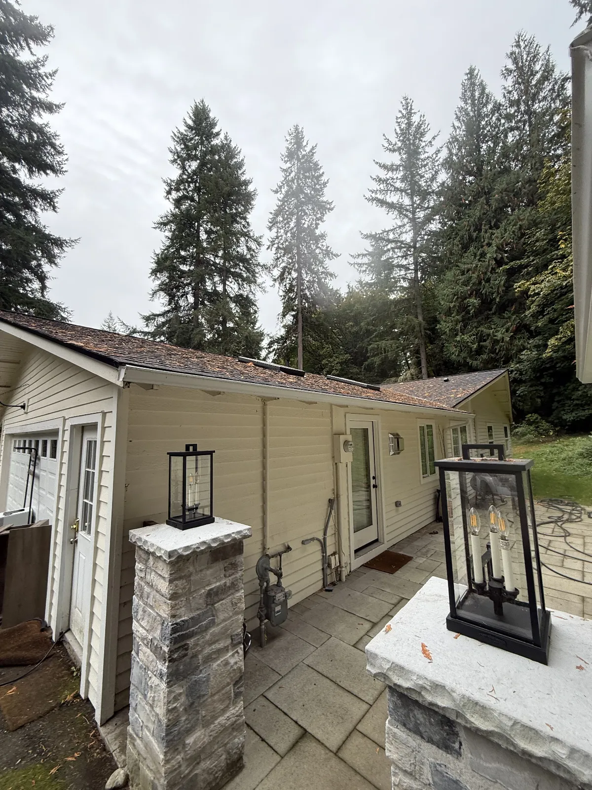

Immediate problem framing
Ice dams form when roof melt refreezes in gutters. Address attic insulation, ventilation, and gutter flow together. Eastside homeowners from Redmond to Kirkland deal with similar issues. Local climate—wet falls, freeze-thaw winters, heavy tree canopy—makes gutter maintenance non-negotiable.
4–6 common causes
- Attic heat melting snow
- Poor ventilation
- Clogged gutters holding water
- Insufficient insulation
- Complex roof geometry
- North-facing eaves
How to diagnose it
Visual cues: Look for overflow during rain, dark streaks on fascia, sagging sections, or standing water in troughs.
Ladder test: Safely inspect from a ladder. Check for debris at downspout openings and in elbows.
Downspout flow test: Run a hose into the gutter and watch downspout discharge. Slow or no flow means a blockage.
When it becomes structural
Unaddressed gutter failure leads to siding damage, foundation saturation, mold risk, and roof deck rot. Early intervention costs a fraction of remediation.
Professional fix options
Osprey Exterior provides: gutter cleaning, re-pitching, seam sealing, section replacement, downspout flush, and full system upgrades. We serve Seattle, Bellevue, Redmond, Kirkland, and Issaquah with fast bids and escrow billing.
Local context
Eastside winter storms create ideal ice dam conditions. Roof and gutter cleaning plus attic upgrades address the full picture.

Get a professional assessment
Schedule an inspection, seasonal cleaning, or repair estimate. We document everything for insurance and resale.
Frequently asked questions
- What causes gutters causing ice dams?
- Common causes include: Attic heat melting snow; Poor ventilation; Clogged gutters holding water. A professional inspection identifies the specific issue.
- How do I diagnose the problem?
- During or after rain, check for overflow, downspout flow, and visual clues like stains or sagging. A ladder test and downspout flow test reveal blockages or pitch issues.
- When does it become structural?
- If you see siding damage, foundation saturation, mold, or roof deck rot, address it immediately. Early fixes cost far less than remediation.
- What professional fixes are available?
- Osprey Exterior offers gutter cleaning, re-pitching, seam sealing, section replacement, downspout flush, and full system upgrades. We serve Seattle, Bellevue, Redmond, Kirkland, and Issaquah.
- How do I get an estimate?
- Call (425) 550-1727 or use our contact form. We provide fast bids and can often schedule within 48 hours for urgent overflow or leak issues.